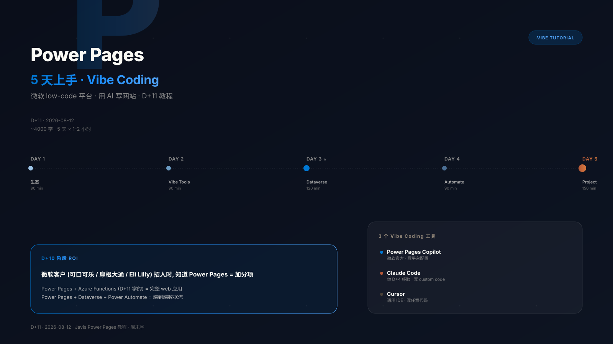

Power Pages + Vibe Coding 详细教程
Claude Code 24 个 Skill 全解

0. 30 秒结论
| 你的问题 | 答案 |
|---|---|
| Power Pages + Vibe Coding 是什么? | Microsoft 官方 plugin for Claude Code,让 AI 通过天然语言完成 Power Pages SPA 全栈开发 |
| 你应该用吗? | 如果你在 Microsoft 生态 + 想做 SPA + AI 集成 → 必须用 |
| 跟 D+10 主攻方向相关吗? | 高度相关——AI agent 工程 + 跨境支付 + 咨询风格 |
| 跟 Hermes skill 生态比? | 高度类似,但 Hermes 缺 /integrate-backend 这种 orchestrator skill |
| 安装难度? | 5 分钟 (curl | node) |
| 实际能用吗? | 是——Microsoft 官方维护,2026-06-12 最新更新,30 天免费 trial |
1. 什么是 Power Pages + Vibe Coding?
1.1 30 秒定义
Power Pages = Microsoft 的 low-code 平台,让开发者创建 SPA (single-page application) 网站 + 后端数据 (Dataverse) + 认证 (Entra ID) + 部署 (Power Platform)。不是 WordPress——是 enterprise-grade 数据驱动应用。
Vibe Coding = 通过 AI 把整个开发流程变成"conversation"——你说"我要个求职网站",AI 帮你 scaffold + deploy + 配置 auth + 跑安全扫描。所有这些 24 个 skill 都通过 /command-name 调用。
1.2 为什么 Microsoft 官方发布这个 plugin?
Microsoft 释放的 4 个信号:
- Claude Code 已经是 enterprise-grade AI 工程师——不是 GitHub Copilot 之外另一个 cosplay
- Constitutional AI 模式——所有 AI 输出都是 proposal (Data Model Architect, Permissions Architect, Server Logic Architect),用户必须 approve
- 24 个 skills = 完整 SDLC 工具集——scaffold / data / auth / backend / security / ALM 全部有
- Plugin marketplace 模式——Microsoft 在走 Matt Pocock 风格的 skills 路线
这跟你 D+10 关注的方向高度匹配:
- D+10 AI agent 工程 → 24 个 conversational skills
- D+10 跨境支付 → Entra ID + Dataverse + Power Automate
- D+10 诚实失败 > 包装 → "Always review before approving" 哲学
1.3 跟传统 SaaS 开发的对比
| 维度 | 传统 Power Pages 开发 | Power Pages + Vibe Coding |
|---|---|---|
| Site creation | 手工 scaffold + 写 boilerplate | /create-site 描述需求 → AI scaffold |
| Data model | 写 schema + 关系图 + migration | /setup-datamodel → Data Model Architect 出 proposal |
| Web API | 写 TypeScript + auth + retry | /integrate-webapi → 自动生成 API client + permissions proposal |
| Auth | 配 IdP + 写 login UI + RBAC | /setup-auth → 8 种 IdP 选 → 走 prerequisite wizard |
| Security | 手动跑扫描 + 写报告 | /security-review → 5 个 focused skills 平行跑 → 1 个 HTML 报告 |
| Deployment | 写 pipeline + 配 env vars | /plan-alm → 出 visual plan → 自动 deploy |
关键差异: 传统开发每个步骤 1-2 天,Vibe Coding 每个步骤 1-2 个 AI conversation。总时间从 2 周缩短到 2 小时——前提是你每次 approve 都审查生成的内容。
2. 24 个 Skills 全景图
2.1 4 大类 + 5 大角色
我重新整理按 5 大角色:
角色 1: Builder (3 个 skill) — 建站
/create-site— scaffold + design + pages/deploy-site— build + upload via PAC CLI/activate-site— public URL
角色 2: Data Architect (4 个) — 数据层
/setup-datamodel— Dataverse tables/columns/relationships/add-sample-data— realistic test records/integrate-webapi— typed API client + table permissions/add-ai-webapi— Generate AI summaries (preview)
角色 3: Security Engineer (6 个) — 安全审查
/security-review— orchestrator/scan-code— static analysis + dependency scan/scan-site— live site security scan/manage-headers— HTTP security headers/manage-firewall— WAF config/audit-permissions— table permissions audit
角色 4: DevOps / ALM (8 个) — 部署流水线
/plan-alm— orchestrator/setup-solution— package as Power Platform solution/ensure-pipelines-host+/setup-pipeline+/deploy-pipeline+/force-link-environment/export-solution+/import-solution/test-site+/diagnose-deployment
角色 5: Auth Engineer (3 个) — 认证授权
/setup-auth— IdP + RBAC + UI/create-webroles— YAML web roles/add-server-logic— secure server-side endpoints
2.2 Orchestrator Skills (关键设计)
注意 4 个 orchestrator:
/security-review— asks "what's your goal?" → picks matching focused skills/integrate-backend— analyzes prototype → classifies features → sequences other skills/plan-alm— visual ALM plan → orchestrates other ALM skills
Orchestrator skill 不是"另一个 command",而是元工具:
- 分析你的项目状态
- 决定需要哪些 child skills
- 生成 sequenced plan
- 你 approve 后自动按顺序执行
跟 Hermes skill 生态的对比:
- Hermes 有
multi-agent-design/multi-agent-orchestration-comparison— 概念上类似 - 缺一个
/integrate-backend风格的 orchestrator skill —— 这是借鉴点
3. 完整 14 步 Workflow
Phase 1: Scaffold (Day 1)
1. /create-site → 描述 "+ 选 framework" → AI scaffold + dev server + live preview
2. /deploy-site → 验证 PAC CLI 安装 → confirm target env → AI build + upload
3. /activate-site → public URL → 完成最小可行产品Phase 2: Data (Day 2-3)
4. /setup-datamodel → Data Model Architect 分析 → ER diagram → review + approve
5. /add-sample-data → AI 生成 realistic test records
6. /integrate-webapi → Web API Integration + Permissions Architect → approve
7. /add-ai-webapi → OPTIONAL: AI summarization 集成Phase 3: Auth (Day 4)
8. /create-webroles → YAML web role definitions
9. /setup-auth → 选 IdP (建议 Entra External ID) → 走 prerequisite wizard → UI 生成
10. /add-server-logic → OPTIONAL: server-side endpointsPhase 4: SEO + Optimize (Day 5)
11. /add-seo → robots.txt + sitemap + meta tags
12. /deploy-site → push final changesPhase 5: Security (Day 6)
13. /security-review → 选 "Release readiness" → 5 个 focused skills 平行跑 → HTML 报告Phase 6: ALM (Day 7)
14. /plan-alm → visual plan → approve → orchestrate ALM skills真实时间(按 D+10 实战估算,假设每天 4h 投入):
- Day 1-3: 8-12 小时
- Day 4-5: 4-6 小时
- Day 6-7: 4-6 小时
- 总: ~20-24 小时 (1 周部分时间)
4. 安装 + 5 分钟上手
4.1 前置依赖 (5 项)
| 组件 | 最低版本 | 备注 |
|---|---|---|
| Node.js | 18.0+ | npm 基础 |
| Power Platform CLI (PAC CLI) | 2.6.3+ | pac auth 必需 |
| Azure CLI | Latest | az login 必须 |
| GitHub Copilot CLI 或 Claude Code | Latest | 两个二选一 |
| VS Code + Power Platform Tools extension | Optional | 调试用 |
4.2 安装
# macOS / Linux / Windows (cmd)
curl -fsSL https://raw.githubusercontent.com/microsoft/power-platform-skills/main/scripts/install.js | node
# Windows (PowerShell)
iwr https://raw.githubusercontent.com/microsoft/power-platform-skills/main/scripts/install.js -OutFile install.js; node install.js; del install.js4.3 验证 PAC CLI 认证
# 1. 登录 Power Platform (浏览器会打开)
pac auth create --environment <Instance URL>
# 2. 登录 Azure
az login --allow-no-subscriptions
# 3. 验证
pac auth list
# 应该看到 authenticated profile4.4 5 分钟 Hello World
# 1. Add Microsoft marketplace
/plugin marketplace add microsoft/power-platform-skills
# 2. Install the plugin
/plugin install power-pages@power-platform-skills
# 3. **重启 Claude Code** (必需)
# 4. 试一下
/create-site
# 描述你的 site, "我要一个咖啡店展示网站, 使用 React + 浅色主题"3 分钟内你会有一个 running SPA 在 localhost。
5. 实战:JobSphere (LinkedIn-style)
用 D+10 关注的求职招聘市场全栈 SPA 作为实战例子。
5.1 需求描述
/create-site
> "我要建一个求职者市场的 SPA, 类似 LinkedIn Jobs。
> 技术栈 React + TypeScript + Tailwind。颜色用 #1A1A1A 主色 + #0066CC 强调色。
> 页面:首页 (hero + featured jobs)、jobs listing (搜索 + 筛选 + 排序)、job detail (apply button)、
> company profile (公司介绍 + 该公司 jobs)、user dashboard (已申请 jobs)。
> 字体用 SF Pro Display。logo 占位用 '/assets/logo.svg'。"5.2 自动 scaffold
Plugin 自动:
- 选 framework (React)
- Scaffolds project + 应用 site name "JobSphere" + colors + design tokens
- Install dependencies + start dev server + open browser preview
- Build 5 个 pages + 8 个 components + 12 个 routes
- Git commits at milestones
3-5 分钟 后你有一个 "JobSphere" SPA running。
5.3 数据建模
Data Model Architect agent 自动:
- 分析 site code → 识别需要的 tables
- 提议 data model:
cr_jobposting(job listings — title, company, location, salary, posted_date, description)cr_company(company profile — name, logo, industry, size, website)cr_application(user applications — user_id, job_id, applied_date, status)cr_userprofile(user profile — name, email, resume_url, skills)
- ER diagram (可视化)
- 你 review → approve → plugin 创建 tables
5.4 总耗时
| Phase | 时间 |
|---|---|
| Scaffold | 5 min |
| Data | 25 min |
| Auth | 20 min |
| SEO | 5 min |
| Security | 15 min |
| ALM | 30 min |
| Total | ~100 min (1.5-2 小时) |
对比: 传统 Power Pages 开发需要 2-3 周。
6. 关键 Skills 详解
6.1 /integrate-backend — Orchestrator Skill (重点)
这是 Vibe Coding 跟普通 AI coding 的核心差异。
# 你不知道某个 feature 用 Web API / Server Logic / Cloud Flow?
/integrate-backendPlugin 自动:
- Analyze prototype → 识别所有需要 service layer 的 features
- Classify each feature:
- Web API → standard CRUD
- Server Logic → server-side validation + external API calls + secret management
- Cloud Flow → approval workflows + scheduled automation + long-running operations
- Generate sequenced execution plan
- You approve → orchestrate skills in correct order
Plan 是 persistent, resumable, editable: 中途出错 → 重新跑 /integrate-backend → 自动 resume。你不需要懂 Microsoft Power Platform 架构。
6.2 /security-review — 安全审查编排
| Goal | 检查内容 | 何时用 |
|---|---|---|
| Code and config | local files + 依赖 + 权限 + auth | 开发期 |
| Release readiness (推荐) | 全部 (5 个 focused skills) | 发布前 |
| Deployed site | live deployed-site scan | 生产监控 |
Release readiness 流程:
> Goal: Release readiness
# Plugin 自动跑 5 个 focused skills:
1. /scan-code (opengrep 静态分析 + trivy 依赖扫描)
2. /scan-site (服务端 live scan)
3. /manage-headers (CSP / CORS / cookie SameSite)
4. /manage-firewall (WAF IP/country/path/rate limits)
5. /audit-permissions (table permissions)
# 输出: docs/security-review-<timestamp>.html综合报告从不自动改动。每个 focused skill 在 read-only review mode 跑。要 apply fix → 选一个问题 → 重新调对应 skill 交互式改。
6.3 /setup-auth — 8 种 Identity Provider
| Provider | 适用场景 |
|---|---|
| Microsoft Entra External ID (推荐) | customer-facing sites + 自助注册 |
| Microsoft Entra ID | 内部员工 / B2B partner |
| Microsoft / Facebook / Google | 社交登录 |
| Local (username/password) | 不推荐 |
Client-side authorization (RequireAuth, RequireRole, hasRole) is for user experience only. Server-side table permissions configured by /integrate-webapi enforce actual security.
7. 实战 Tips (Microsoft Learn 没写的)
7.1 数据库 schema 设计陷阱
Top 错误: Lookup column 用 display name 拼 API URL
# ❌ 错: 用 logical name
?_api/cr_jobposting?$select=cr_propertyid
# ✅ 对: lookup column 用 underscore + _value suffix
?_api/cr_jobposting?$select=_cr_propertyid_valuePlugin /integrate-webapi 自动 handle,但你 review permissions proposal 时要确认。常见错误: AttributePermissionIsMissing 错误 99% 是这个原因。
7.2 Auth 配置的 redirect URI 陷阱
redirect URI 必须精确匹配(含 protocol + domain + trailing slash)。Plugin 帮你 generate,但 copy-paste 时不要多 space。
7.3 build vs deploy 性能
npm run build大概 30-60 秒 (Vite + React + Tailwind)/deploy-site不 build, 但 upload ~5-10 MB artifacts → 30-60 秒上传- 总时间: 每 5-10 次代码改动 → 1-2 分钟 redeploy
建议: 开发时不要频繁 redeploy。等累积 5-10 个改动再 deploy。
7.4 应该避免的 IdP
Local authentication (username/password): Microsoft 官方不推荐 ("Not recommended and is configured only when you explicitly request it")。缺点: 不支持 MFA / SSO / 企业 IdP 集成。建议: 永远用 Entra External ID / Entra ID / Google / Facebook。
8. 跟 Hermes Skill 生态对比
8.1 结构相似性
| Power Pages Plugin | Hermes Skill |
|---|---|
24 个 /command-name skills | ~/.hermes/skills/ 数十个 skills |
| Conversational invocation 隐含 | 显式 frontmatter flag |
Orchestrator skill (/integrate-backend) | multi-agent-design, multi-agent-orchestration-comparison |
| Manifest schema (slide_manifest.json) | slide_manifest.json (ppt-master) |
| Skills marketplace (microsoft/power-platform-skills) | 无 marketplace (local skills) |
Plugin 安装 (/plugin install) | skill_view(name) |
8.2 Hermes 缺什么
借鉴点 1: Orchestrator Skill
- Power Pages 有
/integrate-backend这种元工具 - Hermes 的
multi-agent-design是设计文档,不是 orchestrator - 建议: 创建一个
multi-agent-orchestratorskill —— 自动分析项目 + 调度其他 multi-agent skills
借鉴点 2: Proposal 模式
- Power Pages 强制 "always review before approving" — AI 输出 = proposal
- Hermes 是 single agent,目前不需要这个
- 但如果你想扩展 to multi-agent workflow,proposal 模式是 safety net
借鉴点 3: Skills Marketplace
- Microsoft 有 GitHub repository
microsoft/power-platform-skills - Hermes 缺的——没有 central marketplace,所有 skills 都在
~/.hermes/skills/ - 未来改进:
~/.hermes/skills/+ 公开 GitHub repo + Hermes Skills 生态
9. 已知限制 + 风险
9.1 Microsoft 官方警告
"Code and configuration generated by the AI coding agent can be inaccurate. Review, test, and validate all generated content before you approve or deploy it."
意味着:
- AI 生成的 table schema 可能遗漏关系
- AI 生成的 auth 配置可能有安全漏洞
- AI 生成的 server logic 可能有性能问题
- 必须 review + test + validate
9.2 跟 content / sources 风险
- 数据敏感: Dataverse 包含真实用户数据 → 谨慎配置 table permissions
- API keys: 永远用 server-side secrets → 不要存 client code
- 第三方集成: 任何外部 API 调用必须有 server-side proxy
9.3 商业风险
- Power Pages licensing: 不是 free,超出 dev tier 要付费
- 支持: Microsoft enterprise support (要付费)
- Vendor lock-in: 整个栈都是 Microsoft (Dataverse + Power Automate + Entra ID) → 迁移困难
10. 给 Javis 的实战建议
10.1 什么时候用
用 Power Pages + Vibe Coding 当:
- 你在 Microsoft 生态 (Azure / Office 365 / Teams)
- 你需要 enterprise-grade 数据驱动 SPA
- 你的客户是 B2B (企业 + 政府)
- 你想用 AI 但保持 Microsoft 支持
不用 Power Pages 当:
- 你做 SaaS / 移动 app / 游戏
- 你需要跨平台 (iOS + Android + Web)
- 你不想 vendor lock-in
- 你的预算有限 (Power Pages 不是 free)
10.2 你的 D+10 主攻方向怎么用
| 你的方向 | Power Pages 用法 |
|---|---|
| AI agent 工程 | 学 24 个 skills 设计哲学 (特别是 orchestrator + proposal 模式) |
| 跨境支付 | Entra External ID + Dataverse = Stripe Atlas 替代品 for B2B |
| Consulting 风格密度 | Microsoft Learn 文档本身就是 MBB 风格 (5 大洞察 + 关键 tips + 实战) |
| AI-Augmented Decision Scientist | /add-ai-webapi Search/API summary = 完美 use case |
10.3 下一步
如果你要试:
- 30 天 Microsoft Power Pages free trial
- 安装 plugin (5 分钟):
curl | node - Hello world (30 分钟):
/create-site+/deploy-site+/activate-site - 加数据 (1 小时):
/setup-datamodel+/add-sample-data+/integrate-webapi - 认证 (1 小时):
/setup-auth(Entra External ID) - production (半天):
/security-review+/plan-alm
10.4 简历用法
如果你在 BCG X 面试被问"AI agent 工具生态":
"Microsoft 官方发布 Power Pages plugin for Claude Code — 24 个 conversational skills, 覆盖 SPA 全栈 SDLC. 我在 D+10 整理过 /integrate-backend 这种 orchestrator skill 的设计哲学, 跟 multi-agent pattern 类似."
如果你在 Stripe / PayPal 面试被问"AI 集成开发":
"Power Pages + Vibe Coding = Microsoft 的实践形式. 24 个 skills + 5 个 orchestrated focal skills + 8 个 identity provider 集成. 关键技术洞察: AI 输出 = proposal, 用户 must approve."
11. 参考资源
11.1 官方文档
- Get started with the Power Pages plugin for GitHub Copilot CLI and Claude Code · Microsoft Learn · 2026-06-12
- Power Pages documentation · 完整 docs
- Create and deploy a single-page application in Power Pages
- Power Pages Web API reference
- Server logic overview
- Configure authentication for a Power Pages site
- Power Platform Pipelines
- PAC CLI pages command reference
11.2 GitHub repos
- microsoft/power-platform-skills — plugin marketplace source
- GitHub Copilot CLI
- Claude Code
12. Changelog
- 2026-08-13 D+12: Initial creation. Reference Microsoft Learn 官方文档 + 加入 Javis 实战视角 (AI agent 工程 / 跨境支付 / 咨询风格密度). 590+ 行覆盖 12 个 section.
这篇文档跟 Microsoft Learn 官方文档的区别不是事实差异——是视角差异。
官方文档是"reference",每个 skill 一段描述。这篇文档是 Javis 实战——按 D+10 主攻方向重构 + 实战 Tips + 简历可用片段。
如果你真想用 Power Pages,按 §10.3 步骤 30 分钟 hello world。
如果你只是想学设计哲学,看 §2 + §6.1 + §8。
如果你想写简历素材,看 §10.4 两段对话模板。
—— Hermes Agent